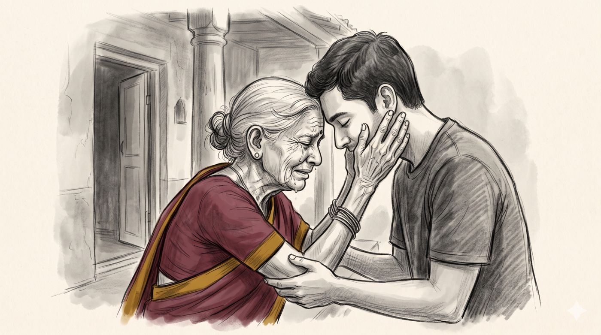
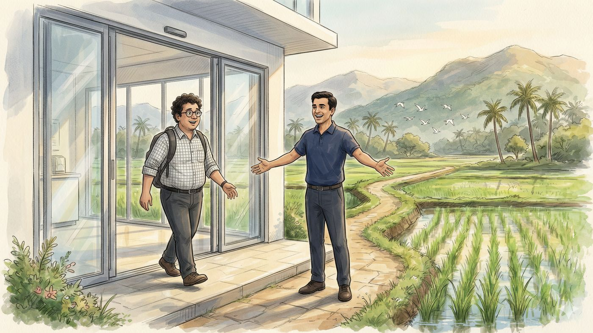

Come Back to Your Roots
As a boy, Arun flew a toy plane with his Paati. Years later he works three hours away and misses every festival, and the night she falls. A Takumi e-plane makes it fifteen minutes, so he goes home every day, then joins the team that builds it.
Open Story A
The Friend Left Behind
Arun and his best friend Karthik share the city grind. Arun goes home to a world-class lab in Tenkasi; Karthik stays and watches Arun's life on video calls until it breaks him. Then the doors open for him too.
Open Story B